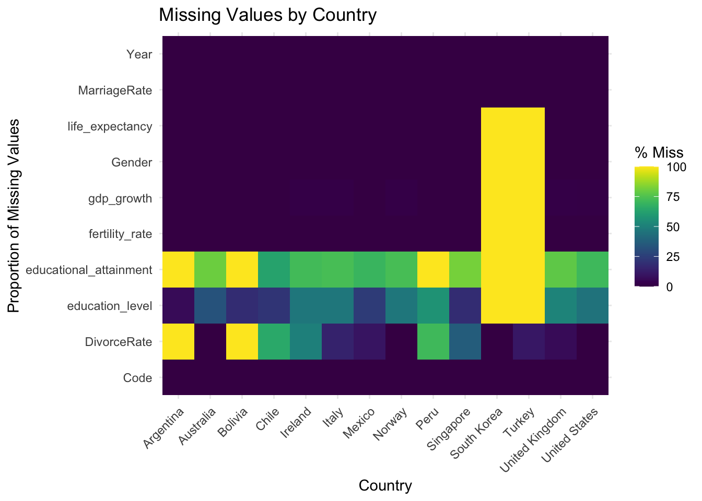

Edit this page
Report an issue
The data for marriage and divorce rates we are using are pulled together from multiple data sources, including Organization for Economic Cooperation and Development (OECD), United Nations (UN), and Statistical Office of the European Union (Eurostat). The data for marriage and divorce rates from all these sources are collected from administrative data sources, including civil registration, population and housing censuses, and statistical reports or administrative records on marriages and divorces. The data is collected by the sources themselves. Another dataset we plan to use is the World Development Indicators, which includes a comprehensive collection of relevant variables alongside fertility rates, such as GDP, educational attainment, life expectancy, etc. Maintained by the World Bank, it is compiled from officially recognized international sources, ensuring high accuracy and reliability. The dataset provides valuable insights into a wide range of development topics, including economic performance, education, health, infrastructure, and environmental sustainability, serving as a critical resource for policymakers, researchers, and analysts.
For marriage and divorce rates, these data are either csv files or excel files with annual updates. The dimension for the marriage and divorce rates collected from Eurostat contains 52 rows and 13 columns, 53 rows and 13 columns, respectively. The divorce rates data collected from the UN has 322 rows and 22 columns. The marriage and divorce rates data collected from OECD both contain 55 rows and 64 columns. The World Development Indicators dataset consists of CSV files that are updated quarterly in April, July, September, and December. The dataset contains 68 columns and 397,936 rows.
The main issue we have for the data is about organization. Since the data we have collected are pulled from multiple sources, it is rather hard to integrate these data into one file since each data has a different format and contains diverse information. Thus, organizing the data together is a big challenge for us as we not only need to filter out the information that is shared or complimentary among these datasets but also need to align the format in each dataset before merging them together for further analysis. Another issue is about the World Development Indicators dataset, which is a comprehensive dataset containing information that is irrelevant to our project. Thus, we need to select and filter out irrelevant features that are unlikely to significantly influence the topic we are focusing on, such as access to clean fuels and technologies for cooking or external health expenditure.
Our plan on importing the data is to download the files from the official website first. After downloading the data, we will first perform some data preprocessing using Excel to ensure that data is in the correct format that can be processed by R. When the data is converted into the suitable format, we will import them in R for further processing and analysis.
library(tidyr) library(dplyr)
Attaching package: 'dplyr'
The following objects are masked from 'package:stats': filter, lag
The following objects are masked from 'package:base': intersect, setdiff, setequal, union
library(ggplot2)
marriage_data <- read.csv("marriage-rate-per-1000-inhabitants.csv") divorce_data <- read.csv("divorces-per-1000-people.csv") # indicator <- read.csv("WDICSV.csv")
marriage_divorce <- marriage_data |> left_join(divorce_data, by = c("Entity", "Code", "Year")) names(marriage_divorce)[1] <- "Country" names(marriage_divorce)[4] <- "MarriageRate" names(marriage_divorce)[5] <- "DivorceRate" sum(is.na(marriage_divorce$DivorceRate))
[1] 100
sum(is.na(marriage_divorce$MarriageRate))
[1] 0
2.2 Missing value analysis ::: {.cell}
all_years <- data.frame(Year = 1960:2018) entities <- unique(marriage_divorce[, c("Country", "Code")]) expanded_data <- merge(entities, all_years, by = NULL) complete_data <- merge(expanded_data, marriage_divorce, by = c("Country", "Code", "Year"), all.x = TRUE)
:::
binMat <- rbind( Missing = colSums(is.na(complete_data)), NonMissing = colSums(!is.na(complete_data)) ) barplot(binMat, main = "Missing Values Current Features", xlab = "Features", ylab = "Count", col = c("#4dffd2", "#ff9999")) legend("topright", legend = c("Missing values", "Non-Missing values"), fill = c("#4dffd2", "#ff9999"))

We still need time to figuring out columns (factors that might influence fertility rates) we need, so here, we start the missing value analysis by focusing on the Marriage Rate and Divorce Rate data. For non-rich countries the data is sparse, so we currently choosing some specific countries for analyzing.
Firstly, we did a missing value detection of marriage and divorce data after combining them together and discovered that there are missing data in Marriage Rate and Divorce Rate as shown in the bar plot.
long_data <- complete_data %>% pivot_longer(cols = c("MarriageRate", "DivorceRate"), # Include only relevant columns names_to = "Variable", values_to = "Value") %>% mutate(Missing = is.na(Value)) ggplot(long_data, aes(x = Year, y = Country, color = Missing)) + geom_point(alpha = 0.6, size = 2) + scale_color_manual(values = c("TRUE" = "red", "FALSE" = "blue"), labels = c("Available", "Missing")) + facet_wrap(~Variable, scales = "free_y") + labs(title = "Missing Values Across Years and Countries", x = "Year", y = "Country", color = "Data Status") + theme_minimal() + theme(axis.text.x = element_text(), strip.text = element_text(face = "bold"))
We then delve in detail how the missing value is spreading in different countries and figured out that United State, United Kingdom, South Korea, Norway, and Italy have more available data that can be used for analyzing. While Singapore, Peru, Bolivia and Argentina seems to have a lot of missing values in both Marriage Rate and Divorce rate.